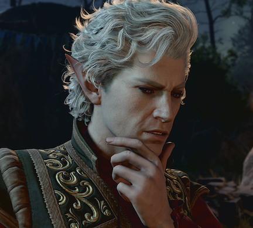

STR: 8 | DEX: 17 | CON: 14 | INT: 13 | WIS:13 | CHA: 10
Astarion is a High-Elf Rogue, and a useful addition to your party thanks to his trickery skills. You can start his questline titled "The Pale Elf" for his backstory. Astarion can be found after the crash of the Nautiloid in Act 1. You will meet Astarion by exploring the south-west portion of the Ravaged Beach, where he will be asking for help to deal with "one of those brain things".